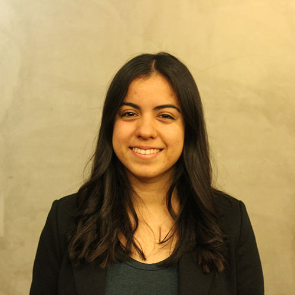

Name: Chelsea Ji
Pronouns: She/Her
Position: Conference Co-Chair
Hello! My name is Chelsea and I'm excited to serve as co-chair for the Regional Business Conference! I'm a third year studying Integrative Biology. I also serve as a Resident Assistant and Vice President of Recognitions for the Golden Bear Chapter of NRHH. My passion and involvement with PACURH began when I attended conferences as a NCC. I’ve always loved representing my school in boardroom and hearing about all the great things happening in residential communities across PACURH. Now I’m excited to bring the Regional Business Conference to Berkeley and show PACURH what Cal is all about. Our conference team has worked tirelessly to deliver a truly unique experience for you and I’m sure that it won’t disappoint! As always, go bears!
Name: CJ Connolly
Pronouns: She/Her
Position: Conference Co-Chair
Hey PACURH! I’m CJ and I am one of the Co-Conference Chairs for RBC 2018! I am a fourth year studying Psychology with plans of pursuing law school next fall. I also serve as the President of the Golden Bear Chapter for NRHH and as a Community and Leadership Assistant overseeing the Unit 3 Hall Association. I am extremely passionate about children and someday hope to make education more accessible and of higher quality around the world. Some of my other favorite things include boba, butterflies, playing Catan, watching Netflix and baking yummy desserts with my Co-Conference Chair Chelsea! We are all so excited for you all to spend some time with us in Berkeley this February. Please do not hesitate to reach out to us with any questions! Froggie Love!
Name: Desirée Nayak
Pronouns: She/Her
Position: Registration Chair
Hey everyone, my name is Desirée Nayak and I am the Registration Chair for the PACURH Regional Business Conference, 2018. I am a sophomore at UC Berkeley, intending to pursue a degree in Cognitive Science. I am from Mumbai, India and lived there pretty much all my life, till I moved here for college. I love to travel and am also a certified scuba diver. When I am not overthinking everything and/ or contemplating life, you will usually find me watching law dramas or psychological thrillers. I am part of the Peer Review Board which is an organisation that deals with policy violations in the residence halls. I am also doing some interesting psychological research at our law school. I look forward to seeing and interacting with all of you (both virtually, through the (rather lengthy) registration form, and also in person, of course). I am very excited for the conference and really looking forward to February!
Name: Danny Chu
Pronouns: He/Him
Position: Technology & Media Chair
Hi y'all! You can call me Danny Or "you there" or "heyya handsome!" what every bloats your boat. I am an Electrical Engineering and Computer Science Major, with an intended double in Cognitive Sciences and minoring in Data Science. If you like data structures, come enroll in Berkeley and take the class with me! I love a good meme or pun, so hit me up! We'll see where our adventure takes us, and look back on all the great meme-ories!
Name: Rachel Lin
Pronouns: She/Her
Position: Housing Chair
Hey y’all! My name is Rachel Lin and I am the Housing Chair for RBC! I am a second-year student intending to double major in Business Administration and Cognitive Science. I’m an out of state student from the great state of Maryland, like twenty minutes outside Baltimore and an hour from Washington D.C. On campus, I’m involved in the student government, National Residence Hall Honorary, and Space Enterprise! In my free time, I love watching the TV show Survivor, petting cats, and drinking boba. Last year, I was RHA Rep for my residence hall, where I had the opportunity to attend RLC at USC, RBC at UoP, and NACURH at Purdue University. Can’t wait to see you all in February!!
Name: Billy Allocca
Pronouns: He/Him
Position: Facilities & Logistics Chair
Hey there!! I’m Billy Allocca, a sophomore at Cal, a Resident Assistant, avid dog lover, and Facilities and Logistics chair. I’m planning on majoring in Business Administration. My hometown is Seattle, Washington and some of my hobbies include hiking, exploring, adventures, binge-watching Parks and Recreation, and running. I’ve been involved with Residential Life ever since Hall Association as a freshman, through PACURH 2016, and now as an RA and chair for RBC! I’m so excited to share this amazing school with all of you at this conference - see you in February!
Name: Jeet Rai
Pronouns: She/Her
Position: Transportation & Safety Chair
Hi! My name is Jeet Rai and I am the Transportation and Safety Chair for the Regional Business Conference. I am a second year at Cal and have declared a Political Science major with an intended Journalism minor. When I am not writing emails and attending meetings, I enjoy spontaneous adventures to Oregon, Nevada, the Berkeley Hills and San Francisco to stargaze and hike. I love learning new languages, pouring over different publications and jamming to music in my free time. On campus, I am the Director of Advocacy for the United Nations Association of Berkeley, a Distribution Analyst at The Daily Californian and the Student Supervisor at Unit 3 Residence Halls. As a freshman, I had the honor of serving as president of Hall Association. I love meeting new people and look forward to seeing you soon!
Name: Elyse O'Neill
Pronouns: She/Her
Position: Volunteer Chair
Hello! My name is Elyse O’Neil and I am the Volunteer Chair for RBC. I am a senior at Cal majoring in Peace and Conflict Studies and minoring in Public Policy. When I’m not stressing out about classes, I enjoy being an active member of res life. I have served as an executive in the Residence Hall Assembly, and am currently a Community and Leadership Advisor and an active member of NRHH. I also enjoy reading, listening to podcasts, binging shows on Netflix, and spending time with friends. I am very excited for everyone to come to Berkeley for RBC. I know that you will all have an awesome time. Remember to be nice to the volunteers, and do not be afraid to ask them for help or food recommendations (there are so many awesome places to explore in this city!)
Name: Alma Avila
Pronouns: She/Her
Position: Hospitality & Sustainability Chair
Hiiiii! My name is Alma Avila, I am the Hospitality and Sustainability Chair for the Regional Business Conference. I am a proud Latina from Southern California, and enjoy playing soccer. I am a sophomore, intended Business Administration and Media Studies. I think Res life is the Best life! As a freshman, I was a representative at Residence Hall Assembly which encouraged me to become part of NRHH. I am glad to be helping organize this conference for you all, and am excited that y’all be coming to UC Berkeley. Outside of academics I am involved in Greek life, Latino Business Student Association, Hermanas Unidas, and the Event Planning Association. Don’t hesitate to reach out! SC: @almaa120612

Name: Sandra Walle
Pronouns: She/Her
Position: Finance Chair
Hi everyone! My name is Sandra Walle and I am the Finance Chair for the Regional Business Conference. I am very passionate about Res Life and grateful that I have the opportunity to work with so many amazing peers to help make Cal a place students can call home. In the Res Halls I work as a Resident Assistant and also serve as the VP of Finance and Communications for the National Residence Hall Honorary (NRHH) Golden Bear Chapter. I am a third year student majoring in Public Health with a double minor in Spanish Literature and Public Policy. On campus I am involved with the Undergraduate Public Health Coalition, work as a Research Assistant in a Psychology lab and volunteer as a Health Advocate through the Alameda Health System. In my free time I enjoy playing board games, tennis, grabbing coffee with friends, and exploring the bay area in search of cute and tasty brunch spots. I am so excited to be a part of the conference planning team and can't wait to see you all in February!
Name: Amberlyn Saw
Pronouns: She/Her
Position: Philanthropy & Sponsorship Chair
Hi everyone! My name is Amberlyn Saw and I am the Philanthropy and Sponsorships Chair. I’m a 3rd year double majoring in Business Administration and Molecular Environmental Biology with a concentration in Environment and Human Health. I’m a second-year RA in Unit 3, the place to be! In my free time, I love road tripping to national parks and spending time outdoors camping, backpacking, and running. If I’m not in my room napping, there’s a good chance I’m searching for the best chai latte in Berkeley, baking brownies in the kitchen, or procrastinating on homework by hiking in the Bay Area. On campus, I’m a mentor for Boost @Haas, a director for the ASUC Office of the CTO, and a member of National Residence Hall Honorary. I am beyond thrilled to be a part of this conference and I can’t wait to meet all of you in February!
Name: Jeah Clemente
Pronouns: She/Her
Position: Dining & Banquet Chair
Hi! My name is Jeah Clemente and I am the Dining and Banquet Chair for this year’s RBC conference. I am a senior studying Integrative Biology and Global Public Health, and I intend to pursue medical school or a career in the health field in the near future. Throughout my time at Berkeley, I have been involved with Bears that Care, a peer education program promoting violence prevention and bystander intervention, the residence halls as an RA, and have done bio-physics and cognitive psychology research with a few professors. When I’m not busy with school and my extracurricular activities, I like to spend time with friends, explore the Bay Area, and try out yummy restaurants all around Berkeley. I’ve had a really great time working with everyone to plan this conference, and I look forward to meeting all of you!
Name: Alex Brown
Pronouns: She/Her
Position: Advisor
Hey PACURH! My name is Alex Brown, and I’m one of the Co-Advisors for RBC 2018! I’m originally from Virginia, where I spent many childhood field trips learning how to make candles in Colonial Williamsburg. I received my BS in Psychology from Virginia Tech (GO HOKIES!), and also hold a MS in College Student Personnel. In my spare time, I put that psychology degree to use and taught my cat how to play fetch. I also create an audio-drama podcast about a group of people living in the middle of the Atlantic Ocean, and the spooky happenings they encounter! If you want to know more about that, just ask! Oh, and if you need anything during the conference, I’ll be there!
Name: Tanya Koroyan
Pronouns: She/Her
Position: Advisor
Hi PACURH! My name is Tanya Koroyan and I’m one of the Co-Advisors for RBC 2018! I’m from the city of Newark, California, located in the beautiful Bay Area. I received my Bachelors in Sociology from San Jose State University (Spartan Up!), where I got my start in student leadership and PACURH. I continued my education at the University of San Francisco where I earned my Masters of Arts in Higher Education and Student Affairs. In my free time I like to draw, dance, drink chai lattes, and spend quality time with family and friends. Looking forward to seeing everyone in Berkeley for RBC 2018! Go Bears!